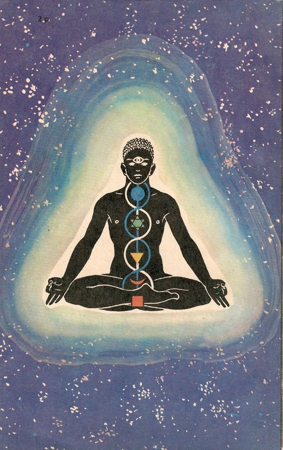

Spirituality is the way in which a person understands and lives life in view of her or his ultimate meaning, beliefs, and values. It is the unifying and integrative aspect of the person's life and, when lived intentionally, is experienced as a process of growth and maturity.
Spirituality
the
Ultimate key


What is Spirituality? Spirituality involves the recognition of a feeling or sense or belief that there is something greater than myself, something more to being human than sensory experience, and that the greater whole of which we are part is cosmic or divine in nature. It is important to remember that there are many other spiritual traditions that exist throughout the world, including traditional African and Indigenous spiritual practices. Such spiritual practices can be particularly important to groups of people who have been subjected to the effects of colonialism.